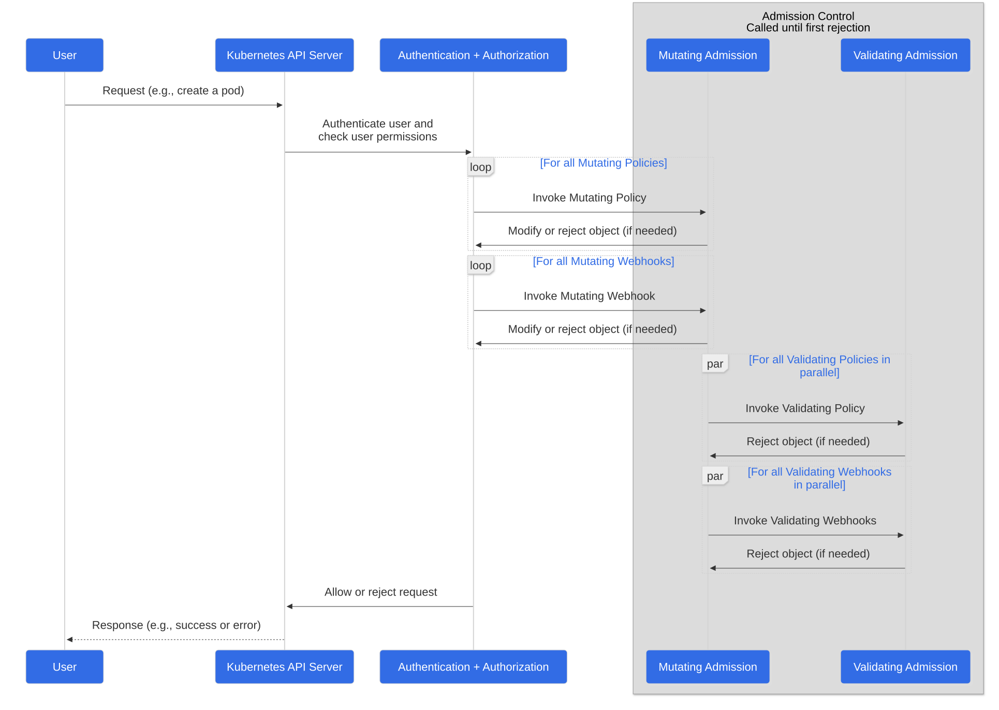

This page provides an overview of admission controllers.
An admission controller is a piece of code that intercepts requests to the Kubernetes API server prior to persistence of the resource, but after the request is authenticated and authorized.
Several important features of Kubernetes require an admission controller to be enabled in order to properly support the feature. As a result, a Kubernetes API server that is not properly configured with the right set of admission controllers is an incomplete server that will not support all the features you expect.
What are they?
Admission controllers are code within the Kubernetes API server that check the data arriving in a request to modify a resource.
Admission controllers apply to requests that create, delete, or modify objects. Admission controllers can also block custom verbs, such as a request to connect to a pod via an API server proxy. Admission controllers do not (and cannot) block requests to read (get, watch or list) objects, because reads bypass the admission control layer.
Admission control mechanisms may be validating, mutating, or both. Mutating controllers may modify the data for the resource being modified; validating controllers may not.
The admission controllers in Kubernetes 1.37 consist of the list below, are
compiled into the kube-apiserver binary, and may only be
configured by the cluster administrator.
Admission control extension points
Within the full list, there are four special controllers: MutatingAdmissionWebhook, MutatingAdmissionPolicy, ValidatingAdmissionWebhook, and ValidatingAdmissionPolicy. The two webhook controllers execute the mutating and validating (respectively) admission control webhooks which are configured in the API. MutatingAdmissionPolicy and ValidatingAdmissionPolicy provides a way to embed declarative mutation/validation code within the API, without relying on any external HTTP callouts.
You can use these four admission controllers to customize cluster behavior at admission time.
Admission control phases
The admission control process proceeds in two phases. In the first phase, mutating admission controllers are run. In the second phase, validating admission controllers are run. Note again that some of the controllers are both.
If any of the controllers in either phase reject the request, the entire request is rejected immediately and an error is returned to the end-user.
Finally, in addition to sometimes mutating the object in question, admission controllers may sometimes have side effects, that is, mutate related resources as part of request processing. Incrementing quota usage is the canonical example of why this is necessary. Any such side-effect needs a corresponding reclamation or reconciliation process, as a given admission controller does not know for sure that a given request will pass all of the other admission controllers.
The ordering of these calls can be seen below.

Why do I need them?
Several important features of Kubernetes require an admission controller to be enabled in order to properly support the feature. As a result, a Kubernetes API server that is not properly configured with the right set of admission controllers is an incomplete server and will not support all the features you expect.
How do I turn on an admission controller?
The Kubernetes API server flag enable-admission-plugins
takes a comma-delimited list of admission control plugins to invoke
prior to modifying objects in the cluster. For example, the following
command line enables the NamespaceLifecycle and the
LimitRanger admission control plugins:
kube-apiserver --enable-admission-plugins=NamespaceLifecycle,LimitRanger ...Note:
Depending on the way your Kubernetes cluster is deployed and how the API server is started, you may need to apply the settings in different ways. For example, you may have to modify the systemd unit file if the API server is deployed as a systemd service, you may modify the manifest file for the API server if Kubernetes is deployed in a self-hosted way.
How do I turn off an admission controller?
The Kubernetes API server flag disable-admission-plugins
takes a comma-delimited list of admission control plugins to be
disabled, even if they are in the list of plugins enabled by
default.
kube-apiserver --disable-admission-plugins=PodNodeSelector,AlwaysDeny ...Which plugins are enabled by default?
To see which admission plugins are enabled:
kube-apiserver -h | grep enable-admission-pluginsIn Kubernetes 1.37, the default ones are:
CertificateApproval, CertificateSigning, CertificateSubjectRestriction, DefaultIngressClass, DefaultStorageClass, DefaultTolerationSeconds, LimitRanger, MutatingAdmissionPolicy, MutatingAdmissionWebhook, NamespaceLifecycle, PersistentVolumeClaimResize, PodSecurity, Priority, ResourceQuota, RuntimeClass, ServiceAccount, StorageObjectInUseProtection, TaintNodesByCondition, ValidatingAdmissionPolicy, ValidatingAdmissionWebhookWhat does each admission controller do?
AlwaysAdmit
Feature state:
Deprecated since Kubernetes v1.13
Type: Validating.
This admission controller allows all pods into the cluster. It is deprecated because its behavior is the same as if there were no admission controller at all.
AlwaysDeny
Feature state:
Deprecated since Kubernetes v1.13
Type: Validating.
Rejects all requests. AlwaysDeny is deprecated as it has no real meaning.
AlwaysPullImages
Type: Mutating and Validating.
This admission controller modifies every new Pod to force the image
pull policy to Always. This is useful in a multitenant
cluster so that users can be assured that their private images can only
be used by those who have the credentials to pull them. Without this
admission controller, once an image has been pulled to a node, any pod
from any user can use it by knowing the image's name (assuming the Pod
is scheduled onto the right node), without any authorization check
against the image. When this admission controller is enabled, images are
always pulled prior to starting containers, which means valid
credentials are required.
CertificateApproval
Type: Validating.
This admission controller observes requests to approve
CertificateSigningRequest resources and performs additional
authorization checks to ensure the approving user has permission to
approve certificate requests with the
spec.signerName requested on the CertificateSigningRequest
resource.
See Certificate Signing Requests for more information on the permissions required to perform different actions on CertificateSigningRequest resources.
CertificateSigning
Type: Validating.
This admission controller observes updates to the
status.certificate field of CertificateSigningRequest
resources and performs an additional authorization checks to ensure the
signing user has permission to sign certificate
requests with the spec.signerName requested on the
CertificateSigningRequest resource.
See Certificate Signing Requests for more information on the permissions required to perform different actions on CertificateSigningRequest resources.
CertificateSubjectRestriction
Type: Validating.
This admission controller observes creation of
CertificateSigningRequest resources that have a
spec.signerName of
kubernetes.io/kube-apiserver-client. It rejects any request
that specifies a 'group' (or 'organization attribute') of
system:masters.
DefaultIngressClass
Type: Mutating.
This admission controller observes creation of Ingress
objects that do not request any specific ingress class and automatically
adds a default ingress class to them. This way, users that do not
request any special ingress class do not need to care about them at all
and they will get the default one.
This admission controller does not do anything when no default
ingress class is configured. When more than one ingress class is marked
as default, it rejects any creation of Ingress with an
error and an administrator must revisit their IngressClass
objects and mark only one as default (with the annotation
"ingressclass.kubernetes.io/is-default-class"). This admission
controller ignores any Ingress updates; it acts only on
creation.
See the Ingress documentation for more about ingress classes and how to mark one as default.
DefaultStorageClass
Type: Mutating.
This admission controller observes creation of
PersistentVolumeClaim objects that do not request any
specific storage class and automatically adds a default storage class to
them. This way, users that do not request any special storage class do
not need to care about them at all and they will get the default
one.
This admission controller does nothing when no default
StorageClass exists. When more than one storage class is
marked as default, and you then create a
PersistentVolumeClaim with no storageClassName
set, Kubernetes uses the most recently created default
StorageClass. When a PersistentVolumeClaim is
created with a specified volumeName, it remains in a
pending state if the static volume's storageClassName does
not match the storageClassName on the
PersistentVolumeClaim after any default StorageClass is
applied to it. This admission controller ignores any
PersistentVolumeClaim updates; it acts only on
creation.
See persistent volume documentation about persistent volume claims and storage classes and how to mark a storage class as default.
DefaultTolerationSeconds
Type: Mutating.
This admission controller sets the default forgiveness toleration for
pods to tolerate the taints notready:NoExecute and
unreachable:NoExecute based on the k8s-apiserver input
parameters default-not-ready-toleration-seconds and
default-unreachable-toleration-seconds if the pods don't
already have toleration for taints
node.kubernetes.io/not-ready:NoExecute or
node.kubernetes.io/unreachable:NoExecute. The default value
for default-not-ready-toleration-seconds and
default-unreachable-toleration-seconds is 5 minutes.
DenyServiceExternalIPs
Type: Validating.
This admission controller rejects all net-new usage of the
Service field externalIPs. This feature is
very powerful (allows network traffic interception) and not well
controlled by policy. When enabled, users of the cluster may not create
new Services which use externalIPs and may not add new
values to externalIPs on existing Service
objects. Existing uses of externalIPs are not affected, and
users may remove values from externalIPs on existing
Service objects.
Most users do not need this feature at all, and cluster admins should consider disabling it. Clusters that do need to use this feature should consider using some custom policy to manage usage of it.
This admission controller is disabled by default.
EventRateLimit
Feature state:
Alpha since Kubernetes v1.13
Type: Validating.
This admission controller mitigates the problem where the API server gets flooded by requests to store new Events. The cluster admin can specify event rate limits by:
- Enabling the
EventRateLimitadmission controller; - Referencing an
EventRateLimitconfiguration file from the file provided to the API server's command line flag--admission-control-config-file:
apiVersion: apiserver.config.k8s.io/v1
kind: AdmissionConfiguration
plugins:
- name: EventRateLimit
path: eventconfig.yaml
...There are four types of limits that can be specified in the configuration:
Server: All Event requests (creation or modifications) received by the API server share a single bucket.Namespace: Each namespace has a dedicated bucket.User: Each user is allocated a bucket.SourceAndObject: A bucket is assigned by each combination of source and involved object of the event.
Below is a sample eventconfig.yaml for such a
configuration:
apiVersion: eventratelimit.admission.k8s.io/v1alpha1
kind: Configuration
limits:
- type: Namespace
qps: 50
burst: 100
cacheSize: 2000
- type: User
qps: 10
burst: 50See the EventRateLimit Config API (v1alpha1) for more details.
This admission controller is disabled by default.
ExtendedResourceToleration
Type: Mutating.
This plug-in facilitates creation of dedicated nodes with extended resources. If operators want to create dedicated nodes with extended resources (like GPUs, FPGAs etc.), they are expected to taint the node with the extended resource name as the key. This admission controller, if enabled, automatically adds tolerations for such taints to pods requesting extended resources, so users don't have to manually add these tolerations.
This admission controller is disabled by default.
ImagePolicyWebhook
Type: Validating.
The ImagePolicyWebhook admission controller allows a backend webhook to make admission decisions.
This admission controller is disabled by default.
Configuration file format
ImagePolicyWebhook uses a configuration file to set options for the behavior of the backend. This file may be json or yaml and has the following format:
imagePolicy:
kubeConfigFile: /path/to/kubeconfig/for/backend
# time in s to cache approval
allowTTL: 50
# time in s to cache denial
denyTTL: 50
# time in ms to wait between retries
retryBackoff: 500
# determines behavior if the webhook backend fails
defaultAllow: trueReference the ImagePolicyWebhook configuration file from the file
provided to the API server's command line flag
--admission-control-config-file:
apiVersion: apiserver.config.k8s.io/v1
kind: AdmissionConfiguration
plugins:
- name: ImagePolicyWebhook
path: imagepolicyconfig.yaml
...Alternatively, you can embed the configuration directly in the file:
apiVersion: apiserver.config.k8s.io/v1
kind: AdmissionConfiguration
plugins:
- name: ImagePolicyWebhook
configuration:
imagePolicy:
kubeConfigFile: <path-to-kubeconfig-file>
allowTTL: 50
denyTTL: 50
retryBackoff: 500
defaultAllow: trueThe ImagePolicyWebhook config file must reference a kubeconfig formatted file which sets up the connection to the backend. It is required that the backend communicate over TLS.
The kubeconfig file's cluster field must point to the
remote service, and the user field must contain the
returned authorizer.
# clusters refers to the remote service.
clusters:
- name: name-of-remote-imagepolicy-service
cluster:
certificate-authority: /path/to/ca.pem # CA for verifying the remote service.
server: https://images.example.com/policy # URL of remote service to query. Must use 'https'.
# users refers to the API server's webhook configuration.
users:
- name: name-of-api-server
user:
client-certificate: /path/to/cert.pem # cert for the webhook admission controller to use
client-key: /path/to/key.pem # key matching the certFor additional HTTP configuration, refer to the kubeconfig documentation.
Request payloads
When faced with an admission decision, the API Server POSTs a JSON
serialized imagepolicy.k8s.io/v1alpha1
ImageReview object describing the action. This object
contains fields describing the containers being admitted, as well as any
pod annotations that match *.image-policy.k8s.io/*.
Note:
The webhook API objects are subject to the same versioning
compatibility rules as other Kubernetes API objects. Implementers should
be aware of looser compatibility promises for alpha objects and check
the apiVersion field of the request to ensure correct
deserialization. Additionally, the API Server must enable the
imagepolicy.k8s.io/v1alpha1 API extensions group
(--runtime-config=imagepolicy.k8s.io/v1alpha1=true).
An example request body:
{
"apiVersion": "imagepolicy.k8s.io/v1alpha1",
"kind": "ImageReview",
"spec": {
"containers": [
{
"image": "myrepo/myimage:v1"
},
{
"image": "myrepo/myimage@sha256:beb6bd6a68f114c1dc2ea4b28db81bdf91de202a9014972bec5e4d9171d90ed"
}
],
"annotations": {
"mycluster.image-policy.k8s.io/ticket-1234": "break-glass"
},
"namespace": "mynamespace"
}
}The remote service is expected to fill the status field
of the request and respond to either allow or disallow access. The
response body's spec field is ignored, and may be omitted.
A permissive response would return:
{
"apiVersion": "imagepolicy.k8s.io/v1alpha1",
"kind": "ImageReview",
"status": {
"allowed": true
}
}To disallow access, the service would return:
{
"apiVersion": "imagepolicy.k8s.io/v1alpha1",
"kind": "ImageReview",
"status": {
"allowed": false,
"reason": "image currently blacklisted"
}
}Note:
ImageReview objects will include all images in Pods
intended to be executed as containers. This covers images specified as
part of the containers, initContainers, or ephemeralContainers fields in
a Pod specification. As a result, images included under image volumes
are not in scope for the ImagePolicyWebhook.
For further documentation refer to the imagepolicy.v1alpha1
API.
Extending with Annotations
All annotations on a Pod that match
*.image-policy.k8s.io/* are sent to the webhook. Sending
annotations allows users who are aware of the image policy backend to
send extra information to it, and for different backends implementations
to accept different information.
Examples of information you might put here are:
- request to "break glass" to override a policy, in case of emergency.
- a ticket number from a ticket system that documents the break-glass request
- provide a hint to the policy server as to the imageID of the image being provided, to save it a lookup
In any case, the annotations are provided by the user and are not validated by Kubernetes in any way.
LimitPodHardAntiAffinityTopology
Type: Validating.
This admission controller denies any pod that defines an
AntiAffinity topology key other than
kubernetes.io/hostname in
requiredDuringSchedulingIgnoredDuringExecution.
This admission controller is disabled by default.
LimitRanger
Type: Mutating and Validating.
This admission controller will observe the incoming request and
ensure that it does not violate any of the constraints enumerated in the
LimitRange object in a Namespace. If you are
using LimitRange objects in your Kubernetes deployment, you
MUST use this admission controller to enforce those constraints.
LimitRanger can also be used to apply default resource requests to Pods
that don't specify any; currently, the default LimitRanger applies a 0.1
CPU requirement to all Pods in the default namespace.
See the LimitRange API reference and the example of LimitRange for more details.
MutatingAdmissionPolicy
Type: Mutating.
This
admission controller uses the Common Expression Language (CEL) to
declare mutations to resources. Mutations can be defined either with an
apply configuration that is merged using the server side apply merge
strategy, or a JSON patch. It is enabled when both feature gate
mutatingadmissionpolicy and
admissionregistration.k8s.io/v1alpha1 group/version are
enabled. If any of the MutatingAdmissionPolicy fails, the request
fails.
MutatingAdmissionWebhook
Type: Mutating.
This admission controller calls any mutating webhooks which match the request. Matching webhooks are called in serial; each one may modify the object if it desires.
This admission controller (as implied by the name) only runs in the mutating phase.
If a webhook called by this has side effects (for example, decrementing quota) it must have a reconciliation system, as it is not guaranteed that subsequent webhooks or validating admission controllers will permit the request to finish.
If you disable the MutatingAdmissionWebhook, you must also disable
the MutatingWebhookConfiguration object in the
admissionregistration.k8s.io/v1 group/version via the
--runtime-config flag, both are on by default.
Use caution when authoring and installing mutating webhooks
- Users may be confused when the objects they try to create are different from what they get back.
- Built in control loops may break when the objects they try to create
are different when read back.
- Setting originally unset fields is less likely to cause problems than overwriting fields set in the original request. Avoid doing the latter.
- Future changes to control loops for built-in resources or third-party resources may break webhooks that work well today. Even when the webhook installation API is finalized, not all possible webhook behaviors will be guaranteed to be supported indefinitely.
NamespaceAutoProvision
Type: Mutating.
This admission controller examines all incoming requests on namespaced resources and checks if the referenced namespace does exist. It creates a namespace if it cannot be found. This admission controller is useful in deployments that do not want to restrict creation of a namespace prior to its usage.
NamespaceExists
Type: Validating.
This admission controller checks all requests on namespaced resources
other than Namespace itself. If the namespace referenced
from a request doesn't exist, the request is rejected.
NamespaceLifecycle
Type: Validating.
This admission controller enforces that a Namespace that
is undergoing termination cannot have new objects created in it, and
ensures that requests in a non-existent Namespace are
rejected. This admission controller also prevents deletion of three
system reserved namespaces default,
kube-system, kube-public.
A Namespace deletion kicks off a sequence of operations
that remove all objects (pods, services, etc.) in that namespace. In
order to enforce integrity of that process, we strongly recommend
running this admission controller.
NodeDeclaredFeatureValidator
Feature state:
Stable since Kubernetes v1.37; enabled by default
(NodeDeclaredFeatures)
Type: Validating.
This admission controller intercepts writes to bound Pods, to ensure
that the changes are compatible with the features declared by the node
where the Pod is currently running. It uses the
.status.declaredFeatures field of the Node to determine the
set of enabled features. If a Pod update requires a feature that is not
listed in the features of its current node, the admission controller
will reject the update request. This prevents runtime failures due to
feature mismatch after a Pod has been scheduled.
This admission controller is enabled by default if the NodeDeclaredFeatures
feature gate is enabled.
NodeRestriction
Type: Validating.
This admission controller limits the Node and
Pod objects a kubelet can modify. In order to be limited by
this admission controller, kubelets must use credentials in the
system:nodes group, with a username in the form
system:node:<nodeName>. Such kubelets will
only be allowed to modify their own Node API object, and
only modify Pod API objects that are bound to their node.
kubelets are not allowed to update or remove taints from their
Node API object.
The NodeRestriction admission plugin prevents kubelets
from deleting their Node API object, and enforces kubelet
modification of labels under the kubernetes.io/ or
k8s.io/ prefixes as follows:
- Forbidden (Kubelets are blocked from modifying
these):
- Labels with a
node-restriction.kubernetes.io/prefix. This prefix is reserved for administrators to labelNodeobjects for workload isolation. - Labels with a
node-role.kubernetes.io/prefix (for example:node-role.kubernetes.io/control-plane). These are restricted to prevent unprivileged nodes from self-declaring cluster roles.
- Labels with a
- Allowed (Kubelets can add/remove/update these):
kubernetes.io/hostnamekubernetes.io/archkubernetes.io/osbeta.kubernetes.io/instance-typenode.kubernetes.io/instance-typefailure-domain.beta.kubernetes.io/region(deprecated)failure-domain.beta.kubernetes.io/zone(deprecated)topology.kubernetes.io/regiontopology.kubernetes.io/zonekubelet.kubernetes.io/-prefixed labelsnode.kubernetes.io/-prefixed labels
- Reserved: Use of any other labels under the
kubernetes.ioork8s.ioprefixes by kubelets is reserved. TheNodeRestrictionadmission plugin generally disallows these to prevent unauthorized self-labeling, but may allow additional labels under these prefixes in the future as part of future features.
When the ServiceAccountNodeAudienceRestriction feature
gate is enabled, this admission plugin also restricts the audiences
for which a kubelet can request service account tokens via the
TokenRequest API. The kubelet can only request tokens for
audiences already referenced by pods on that node (through projected
service account token volumes or CSI driver token requests), or for
audiences explicitly granted through RBAC using the
request-serviceaccounts-token-audience verb. For more
details, see Service
account token audience restriction.
Future versions may add additional restrictions to ensure kubelets have the minimal set of permissions required to operate correctly.
OwnerReferencesPermissionEnforcement
Type: Validating.
This admission controller protects the access to the
metadata.ownerReferences of an object so that only users
with delete permission to the object can change it.
This admission controller also protects the access to
metadata.ownerReferences[x].blockOwnerDeletion of an
object, so that only users with update permission to
the finalizers subresource of the referenced owner
can change it.
PersistentVolumeClaimResize
Feature state:
Stable since Kubernetes v1.24
Type: Validating.
This admission controller implements additional validations for
checking incoming PersistentVolumeClaim resize
requests.
Enabling the PersistentVolumeClaimResize admission
controller is recommended. This admission controller prevents resizing
of all claims by default unless a claim's StorageClass
explicitly enables resizing by setting allowVolumeExpansion
to true.
For example: all PersistentVolumeClaims created from the
following StorageClass support volume expansion:
apiVersion: storage.k8s.io/v1
kind: StorageClass
metadata:
name: gluster-vol-default
provisioner: kubernetes.io/glusterfs
parameters:
resturl: "http://192.168.10.100:8080"
restuser: ""
secretNamespace: ""
secretName: ""
allowVolumeExpansion: trueFor more information about persistent volume claims, see PersistentVolumeClaims.
PodNodeSelector
Feature state:
Alpha since Kubernetes v1.5
Type: Validating.
This admission controller defaults and limits what node selectors may be used within a namespace by reading a namespace annotation and a global configuration.
This admission controller is disabled by default.
Configuration file format
PodNodeSelector uses a configuration file to set options
for the behavior of the backend. Note that the configuration file format
will move to a versioned file in a future release. This file may be json
or yaml and has the following format:
podNodeSelectorPluginConfig:
clusterDefaultNodeSelector: name-of-node-selector
namespace1: name-of-node-selector
namespace2: name-of-node-selectorReference the PodNodeSelector configuration file from
the file provided to the API server's command line flag
--admission-control-config-file:
apiVersion: apiserver.config.k8s.io/v1
kind: AdmissionConfiguration
plugins:
- name: PodNodeSelector
path: podnodeselector.yaml
...Configuration Annotation Format
PodNodeSelector uses the annotation key
scheduler.alpha.kubernetes.io/node-selector to assign node
selectors to namespaces.
apiVersion: v1
kind: Namespace
metadata:
annotations:
scheduler.alpha.kubernetes.io/node-selector: name-of-node-selector
name: namespace3Internal Behavior
This admission controller has the following behavior:
- If the
Namespacehas an annotation with a keyscheduler.alpha.kubernetes.io/node-selector, use its value as the node selector. - If the namespace lacks such an annotation, use the
clusterDefaultNodeSelectordefined in thePodNodeSelectorplugin configuration file as the node selector. - Evaluate the pod's node selector against the namespace node selector for conflicts. Conflicts result in rejection.
- Evaluate the pod's node selector against the namespace-specific allowed selector defined the plugin configuration file. Conflicts result in rejection.
Note:
PodNodeSelector allows forcing pods to run on specifically labeled nodes. Also see the PodTolerationRestriction admission plugin, which allows preventing pods from running on specifically tainted nodes.
PodSecurity
Feature state:
Stable since Kubernetes v1.25
Type: Validating.
The PodSecurity admission controller checks new Pods before they are admitted, determines if it should be admitted based on the requested security context and the restrictions on permitted Pod Security Standards for the namespace that the Pod would be in.
See the Pod Security Admission documentation for more information.
PodSecurity replaced an older admission controller named PodSecurityPolicy.
PodTolerationRestriction
Feature state:
Alpha since Kubernetes v1.7
Type: Mutating and Validating.
The PodTolerationRestriction admission controller verifies any conflict between tolerations of a pod and the tolerations of its namespace. It rejects the pod request if there is a conflict. It then merges the tolerations annotated on the namespace into the tolerations of the pod. The resulting tolerations are checked against a list of allowed tolerations annotated to the namespace. If the check succeeds, the pod request is admitted otherwise it is rejected.
If the namespace of the pod does not have any associated default tolerations or allowed tolerations annotated, the cluster-level default tolerations or cluster-level list of allowed tolerations are used instead if they are specified.
Tolerations to a namespace are assigned via the
scheduler.alpha.kubernetes.io/defaultTolerations annotation
key. The list of allowed tolerations can be added via the
scheduler.alpha.kubernetes.io/tolerationsWhitelist
annotation key.
Example for namespace annotations:
apiVersion: v1
kind: Namespace
metadata:
name: apps-that-need-nodes-exclusively
annotations:
scheduler.alpha.kubernetes.io/defaultTolerations: '[{"operator": "Exists", "effect": "NoSchedule", "key": "dedicated-node"}]'
scheduler.alpha.kubernetes.io/tolerationsWhitelist: '[{"operator": "Exists", "effect": "NoSchedule", "key": "dedicated-node"}]'This admission controller is disabled by default.
PodTopologyLabels
Feature state:
Beta since Kubernetes v1.35; enabled by default
(PodTopologyLabelsAdmission)
Type: Mutating
The PodTopologyLabels admission controller mutates the
pods/binding subresources for all pods bound to a Node,
adding topology labels matching those of the bound Node. This allows
Node topology labels to be available as pod labels, which can be
surfaced to running containers using the Downward API.
The labels available as a result of this controller are the topology.kubernetes.io/region
and topology.kubernetes.io/zone
labels.
Note:
If any mutating admission webhook adds or modifies labels of the
pods/binding subresource, these changes will propagate to
pod labels as a result of this controller, overwriting labels with
conflicting keys.
This admission controller is enabled when the
PodTopologyLabelsAdmission feature gate is enabled.
Priority
Type: Mutating and Validating.
The priority admission controller uses the
priorityClassName field and populates the integer value of
the priority. If the priority class is not found, the Pod is
rejected.
ResourceQuota
Type: Validating.
This admission controller will observe the incoming request and
ensure that it does not violate any of the constraints enumerated in the
ResourceQuota object in a Namespace. If you
are using ResourceQuota objects in your Kubernetes
deployment, you MUST use this admission controller to enforce quota
constraints.
See the ResourceQuota API reference and the example of Resource Quota for more details.
RuntimeClass
Type: Mutating and Validating.
If you define a RuntimeClass with Pod
overhead configured, this admission controller checks incoming Pods.
When enabled, this admission controller rejects any Pod create requests
that have the overhead already set. For Pods that have a RuntimeClass
configured and selected in their .spec, this admission
controller sets .spec.overhead in the Pod based on the
value defined in the corresponding RuntimeClass.
See also Pod Overhead for more information.
ServiceAccount
Type: Mutating and Validating.
This admission controller implements automation for serviceAccounts.
The Kubernetes project strongly recommends enabling this admission
controller. You should enable this admission controller if you intend to
make any use of Kubernetes ServiceAccount objects.
To enhance the security measures around Secrets, use separate namespaces to isolate access to mounted secrets.
StorageObjectInUseProtection
Type: Mutating.
The StorageObjectInUseProtection plugin adds the
kubernetes.io/pvc-protection or
kubernetes.io/pv-protection finalizers to newly created
Persistent Volume Claims (PVCs) or Persistent Volumes (PV). In case a
user deletes a PVC or PV the PVC or PV is not removed until the
finalizer is removed from the PVC or PV by PVC or PV Protection
Controller. Refer to the Storage
Object in Use Protection for more detailed information.
TaintNodesByCondition
Type: Mutating.
This admission controller taints newly created Nodes as
NotReady and NoSchedule. That tainting avoids
a race condition that could cause Pods to be scheduled on new Nodes
before their taints were updated to accurately reflect their reported
conditions.
ValidatingAdmissionPolicy
Type: Validating.
This
admission controller implements the CEL validation for incoming
matched requests. It is enabled when both feature gate
validatingadmissionpolicy and
admissionregistration.k8s.io/v1alpha1 group/version are
enabled. If any of the ValidatingAdmissionPolicy fails, the request
fails.
ValidatingAdmissionWebhook
Type: Validating.
This admission controller calls any validating webhooks which match
the request. Matching webhooks are called in parallel; if any of them
rejects the request, the request fails. This admission controller only
runs in the validation phase; the webhooks it calls may not mutate the
object, as opposed to the webhooks called by the
MutatingAdmissionWebhook admission controller.
If a webhook called by this has side effects (for example, decrementing quota) it must have a reconciliation system, as it is not guaranteed that subsequent webhooks or other validating admission controllers will permit the request to finish.
If you disable the ValidatingAdmissionWebhook, you must also disable
the ValidatingWebhookConfiguration object in the
admissionregistration.k8s.io/v1 group/version via the
--runtime-config flag.
Is there a recommended set of admission controllers to use?
Yes. The recommended admission controllers are enabled by default
(shown here),
so you do not need to explicitly specify them. You can enable additional
admission controllers beyond the default set using the
--enable-admission-plugins flag (order doesn't
matter).